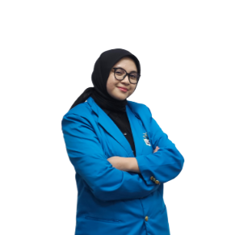

Departemen Kajian Aksi dan Strategi
Kajian, Aksi, dan Strategi yang disingkat Kastrat adalah departemen yang memiliki fokus terhadap isu-isu dalam ruang lingkup kampus maupun masyarakat umum. Kastrat sendiri merupakan sebuah proses berpikir, bersikap, dan bertindak dengan sifat yang kritis dan konstruktif atas sebuah permasalahan.
Anggota Departemen Kastrat
Periode 2023/2024
Zufr Fadhly A.
Ketua Departemen
Shabrina Nandiva N.
HRD
Ahmad Zia
Anggota Departemen
Auliyah
Anggota Departemen
Nabila Putri N.
Anggota Departemen
Rafli Rieugenia Tejasukmana
Anggota Departemen
Maulana Sadad
Anggota Departemen
Hasna Nandya Maheswari
Anggota Departemen

Andi Najda N.
Anggota Departemen
Alifia Faiza
Anggota Departemen
Amanda Hafizhah
Anggota Departemen